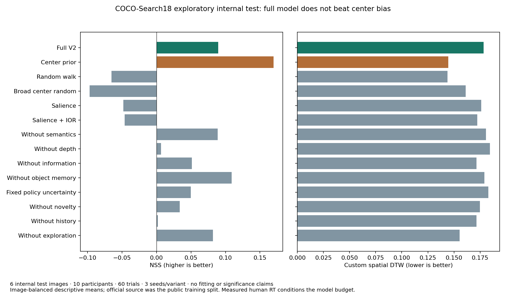

The engineering is working; human likeness is not established. The full model remains behind the center-prior baseline on density and sequence measures. The sample is small and comes from an internal split of released training images. No parameter fitting or population significance claim is made.
Return to the interactive scene explorer · Evaluation metadata and aggregate results · Summary CSV · Image-level CSV · Participant-level CSV
Pinned, SHA256-verified SSDLite320 MobileNetV3 and MiDaS Small run on CPU. Semantic detections are admitted only centrally from a foveated context crop; full-image semantic detections never become a hidden search bank. The depth map is private sensor output; central observed samples alone update memory. The same provider factory and caches are used by run-one, prepared previews and empirical evaluation.
Object memory now separates identity, image-position and depth uncertainty, observation count, exposure time, relative depth dispersion and relative 3D envelopes. Association rejects strong class conflicts and retains previously observed partial extents. Duration-dependent evidence is capped by a sensory ceiling. A computational expected-reduction proxy and bounded stay action are added, while legacy evidence and uncertainty×novelty remain selectable baselines. Stay segments are merged for fixation metrics.
| Photograph | Load | Depth first call | Depth cache | Detector first calls | Detector cache | Peak process RSS | Central semantic detections |
|---|---|---|---|---|---|---|---|
| sample.jpg | 2.85 s | 0.311 s | 0.031 s | 0.106 s | 0.0019 s | 511.2 MiB | 5 |
| 000000465457.jpg.png | 6.53 s | 0.422 s | 0.032 s | 0.138 s | 0.0081 s | 461.5 MiB | 4 |
Times are observed wall-clock measurements on this CPU, with other jobs sometimes running, not controlled production throughput. Memory is whole-process peak RSS including Python and both models. First-call measurements in these two reports were made with previously empty corresponding cache entries. Semantic detection counts demonstrate operation, not detection accuracy. No measured depth ground truth was available.

| Model / component removal | NSS ↑ | AUC ↑ | Custom DTW ↓ | Mean duration (ms) | Mean post-initial count | Mean movement (px) | Refixation rate |
|---|---|---|---|---|---|---|---|
| Full V2 | 0.089 | 0.517 | 0.178 | 269.0 | 1.83 | 219.1 | 0.000 |
| Center prior | 0.170 | 0.527 | 0.144 | 265.1 | 1.87 | 177.8 | 0.004 |
| Random walk | -0.065 | 0.497 | 0.144 | 356.3 | 1.38 | 86.6 | 0.000 |
| Broad center random | -0.097 | 0.527 | 0.161 | 267.7 | 1.84 | 148.6 | 0.001 |
| Salience | -0.048 | 0.500 | 0.176 | 305.7 | 1.63 | 210.4 | 0.009 |
| Salience + IOR | -0.046 | 0.497 | 0.172 | 272.2 | 1.82 | 200.0 | 0.004 |
| Without semantics | 0.089 | 0.516 | 0.181 | 269.0 | 1.83 | 214.3 | 0.000 |
| Without depth | 0.006 | 0.505 | 0.185 | 265.2 | 1.86 | 200.7 | 0.000 |
| Without information | 0.051 | 0.502 | 0.172 | 220.1 | 2.22 | 178.8 | 0.006 |
| Without object memory | 0.109 | 0.519 | 0.179 | 269.0 | 1.83 | 225.4 | 0.000 |
| Fixed policy uncertainty | 0.050 | 0.510 | 0.183 | 246.7 | 1.98 | 204.5 | 0.003 |
| Without novelty | 0.034 | 0.511 | 0.175 | 214.9 | 2.26 | 202.6 | 0.003 |
| Without history | 0.002 | 0.525 | 0.172 | 272.3 | 1.82 | 169.6 | 0.005 |
| Without exploration | 0.082 | 0.487 | 0.155 | 274.5 | 1.52 | 67.1 | 0.028 |
Human reference mean duration: 208.7 ms; full model: 269.0 ms. Human mean post-initial count: 2.28; full model: 1.83. Full-model NSS 0.089 versus center-prior 0.170; DTW 0.178 versus 0.144.
Removing depth changes NSS by -0.083 and DTW by +0.006. This is a descriptive association within this configuration, not evidence of physical depth accuracy or a statistically established contribution. Semantic and other removal effects must likewise be read across several metrics. A mechanism that improves density can worsen timing or sequence fit.
NSS and heatmap correlation use generated duration-weighted densities. AUC uses deterministic nonfixated-pixel negatives and tie-correct SciPy ranks; it is not branded AUC-Judd. Sequence distance is our documented custom spatial DTW, not MultiMatch. Durations/amplitudes and refixations are available per trial/image/participant. The completed pilot reports per-trial mean timing/movement summaries; event-distribution Wasserstein functions are now implemented/tested in the evaluator but are not part of this completed pilot table. Adjacent stay segments are coalesced before scoring.
Source: COCO-Search18 · Pinned research mirror · Model source and implementation audit. Raw human fixations and COCO photos are not redistributed with this report.